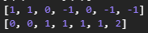

The game is simple: there are mines on the field, try not to step on one. Pick a tile and it will reveal how many mines surround it.
There are 2 mines surrounding this tile.
Right click on an open tile to flag if you suspect a mine on that location.
The game ends as a victory once all mines are flagged or all open tiles are mines. Cheat: make a turn of safe moves. If no safe moves found, display highlights that signal probabilities of possible tiles. The best moves are highlighted in bold. Hover on a highlighted tile too check probability
So how do we traverse through the mine field safely?
1. Apparent moves
Sometimes the moves we can make are very apparent, require no calculations.
An apparent case
In this case, the second tile only has 1 open neighbor (surrounding tiles), thus, this one must be a mine.
With a mine exposed, we can infer that all other open neighbors of first and third tiles are safe to explore, since the mine is already accounted for.
From there, we can deduct two simple rules to make a safe guess:
If the value of tile equals to the number of its open neighbors, all of them are mines.
If the number of known mines surrounding a tile equals to its value, then all of its open neighbors are safe.
2. Computed moves
Though those are solid rules to make guesses, they are not nearly enough to advance the game.
A harder case
Notice that the above rules can't be applied in this case. We can still make some safe guesses, but it involves some calculations.
Let's assign all the tiles surrounding known tiles as x1, x2,... xi each has a value of either 1 or 0, where 1 signals a mine, 0 otherwise.
We know that each known tile reveals how many mines in its neighbor. The 3 known tiles would give this set of equations:
x1 + x2 = 1
x1 + x2 + x3 + x4 + x5 = 2
x4 + x5 = 1
3 equations but 5 variables, that's not enough! In fact, most cases we encounter would not give enough equations to solve all variables, but the set can be solved partially.
To do this in a general way, we convert the set into a matrix and transform it to Reduced Row Echelon form (RREF).
Matrix form and Reduced Row Echelon form
From the RREF matrix, we can see that x3 = 0, meaning this tile is safe to explore.
Since the domain of variable is restricted to only 0 or 1, we can make inference on some non-obvious equations:
If the value is 0 and all other coefficients are non-negatives, then all variables with non-zero coefficients are 0. Example:
=> x2 = x4 = 0
If the sum of all positive coefficients equals to the value, then all positive coefficients are 1s and negative ones are 0s. This also applies to the opposite sign. Example:
=> x2 = x4 = 1; x3 = x7 = 0
3. Probabilities
There will be cases where no safe inferences can be made.

What guesses can we make in this situation?
Ultimately, we can treat Minesweeper as a game of chance: each tile we step on has a chance of being a mine. A none-mine tile gives probabilities of its neighbors being mines.
How do we calculate this probability
Probability for neighbors surround a single known tile is very simple: p = # of mines⁄# of open neighbors.
But if an open tile is under influence of 2 or more known tiles, it could get tricky.
My attempts to apply a Bayesian model didn't go very well, so I decided to brute force my way to the solution. Literally.
If we generate all possible solutions for all open tiles near known tiles (edge tiles), the probability of a given edge tile being a mine is:
p = # of valid solutions contain a mine at current location⁄# all valid solutions
The classic way of brute force through all solutions would be troublesome, since it has to check 2# of edge tiles solutions and pick out valid ones.
There are 244 = 17,592,186,044,416 (17 trillions) solutions to be checked for this board piece
To improve the algorithm, we can apply some divide and conquer: generate solutions for each row in the RREF matrix, then combine them.
This way, only the valid solutions are considered during the merge phase. For example:
In this case, there are 8 variables for 8 open tiles. Brute forcing would require 28 = 256 iterations.
Genrating solutions for first row requires 23 = 8 iterations. Output 3 valid solutions.
Genrating solutions for second row requires 25 = 32 iterations. Output 5 valid solutions.
Merging solutions by cross multiplication requires 3 * 5 = 15 iterations.
Total iterations by divide and conquer: 8 + 32 + 15 = 55 < 256 iterations.
We can further improve the algorithm by divide the edge tiles into groups.
If 2 known tiles have overlapping neighbors, all of their neighbors are grouped since they have influence to each other's probability of having a mine.
Since each group don't have any influence to one another, we can calculate their probabilities individually without cross multiplying.
For this instance, we can divide edge tiles into 2 groups. Let's go through the calculations:
Row 1: 25 = 32 iterations output 10 solutions.
Row 2: 28 = 256 iterations output 28 solutions.
Row 3: 23 = 8 iterations output 3 solutions.
Total by previous algorithm: 32 + 256 + 8 + 10 * 28 * 3 = 1136 iterations.
Total by group partition: 32 + 256 + 8 + 28 * 3 = 380 iterations.
I ran the game in hard difficulty (16x30 board, 99 mines) 20,000 times where the tiles with least mine probability are prioritized. The average winrate was around 22.375%
 if you suspect a mine on that location.
if you suspect a mine on that location.